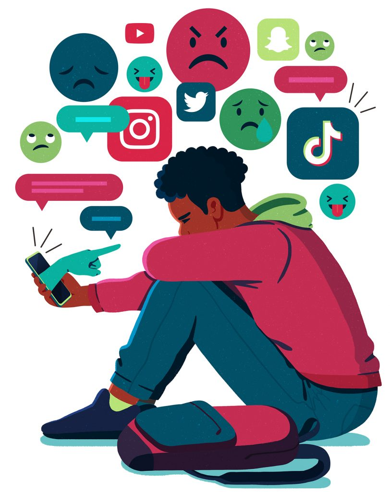

Impacto del Acoso
El acoso escolar incluye agresión verbal, exclusión social y violencia física. Pudiendo tener efectos devastadores en la autoestima y salud mental de los adolescentes. En el ámbito digital, el ciberacoso usa redes sociales y mensajería para hostigar.
Consecuencias: depresión, aislamiento, bajo rendimiento académico e incluso ideación suicida en casos graves.
Las víctimas de acoso tienen hasta un 70% más de probabilidades de desarrollar trastornos de ansiedad en la adultez.

Prevención y Soluciones
- Programas educativos sobre convivencia y empatía.
- Supervisión activa de las actividades en línea.
- Fomentar la comunicación abierta entre adolescentes, padres y docentes.